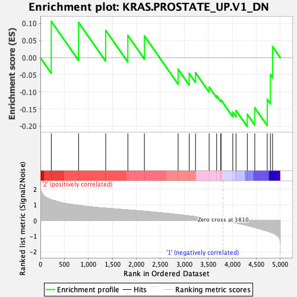
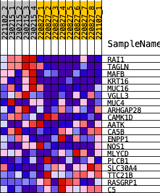
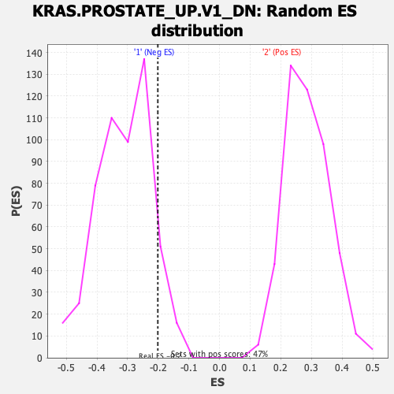

| | | Dataset | norm_counts_forGSEA.Phenotype.cls#2_versus_1.Phenotype.cls#2_versus_1_repos |
| Phenotype | Phenotype.cls#2_versus_1_repos |
| Upregulated in class | 1 |
| GeneSet | KRAS.PROSTATE_UP.V1_DN |
| Enrichment Score (ES) | -0.20137607 |
| Normalized Enrichment Score (NES) | -0.64521396 |
| Nominal p-value | 0.91369605 |
| FDR q-value | 1.0 |
| FWER p-Value | 1.0 |
Table: GSEA Results Summary

Fig 1: Enrichment plot: KRAS.PROSTATE_UP.V1_DN
Profile of the Running ES Score & Positions of GeneSet Members on the Rank Ordered List
| SYMBOL | RANK IN GENE LIST | RANK METRIC SCORE | RUNNING ES | CORE ENRICHMENT | | 1 | RAI1 | 227 | 1.336 | 0.1061 | No |
| 2 | TAGLN | 796 | 0.975 | 0.1028 | No |
| 3 | MAFB | 1361 | 0.794 | 0.0797 | No |
| 4 | KRT16 | 1823 | 0.685 | 0.0649 | No |
| 5 | MUC16 | 2168 | 0.596 | 0.0636 | No |
| 6 | VGLL3 | 2871 | 0.383 | -0.0339 | No |
| 7 | MUC4 | 3102 | 0.298 | -0.0462 | No |
| 8 | ARHGAP28 | 3233 | 0.249 | -0.0440 | No |
| 9 | CAMK1D | 3517 | 0.130 | -0.0861 | No |
| 10 | AATK | 3674 | 0.055 | -0.1112 | No |
| 11 | CA5B | 3760 | 0.024 | -0.1255 | No |
| 12 | ENPP1 | 3764 | 0.024 | -0.1234 | No |
| 13 | NOS1 | 4009 | -0.119 | -0.1589 | No |
| 14 | MLYCD | 4077 | -0.158 | -0.1544 | No |
| 15 | PLCB1 | 4312 | -0.314 | -0.1657 | Yes |
| 16 | SLC30A4 | 4468 | -0.445 | -0.1463 | Yes |
| 17 | TTC21B | 4728 | -0.677 | -0.1214 | Yes |
| 18 | RASGRP1 | 4794 | -0.747 | -0.0496 | Yes |
| 19 | C5 | 4839 | -0.798 | 0.0321 | Yes |
Table: GSEA details [plain text format]

Fig 2: KRAS.PROSTATE_UP.V1_DN
Blue-Pink O' Gram in the Space of the Analyzed GeneSet

Fig 3: KRAS.PROSTATE_UP.V1_DN: Random ES distribution
Gene set null distribution of ES for KRAS.PROSTATE_UP.V1_DN